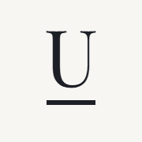
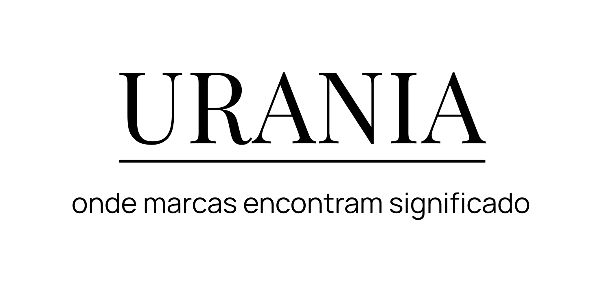
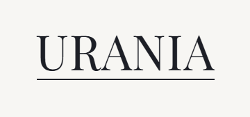

Manual de marca · Versão 1.0 · Outubro de 2026
Estéfany Reis
Direção de comunicação · Urânia
Direção de comunicação · Urânia
O brandbook da Urânia guarda a essência, o método, a personalidade e a voz. Este manual transforma tudo isso em regras de aplicação: medidas, cores, tamanhos, grades e textos prontos.
Foi escrito para três leitores: a Estéfany produzindo no Canva, um designer montando arquivos e uma gráfica imprimindo. Toda regra aqui pode ser medida. Se não pode ser medida, não está aqui.
Na dúvida, vale a pergunta da marca: isso ajuda alguém a olhar melhor, ou só ocupa espaço?
| x | Altura do U no logotipo. Todas as medidas do logo são proporções de x e valem em qualquer tamanho. |
| W | Largura do nome URANIA. W = 5,04x. |
| Canvas | Medidas em px do Canva: feed 1080 × 1350, stories 1080 × 1920, A4 794 × 1123. |
| Lâmina | Cada slide de carrossel, cada story, cada página de PDF. |
| Peça | O conjunto publicado: um carrossel inteiro, uma sequência de stories, um PDF. |
Não existem versão horizontal, versão com o glyph, versão com o nome da Estéfany travado no logo nem versão em contorno. Cada versão a mais é um ponto de erro a mais.
Usar em: capa de PDF (proposta, apresentação de serviços, diagnóstico, entregas), capa do brandbook e do manual, abertura de apresentação ao vivo.
Não usar: em conteúdo editorial, abaixo do mínimo, sobre fotografia.

Usar em: fechamento de carrossel institucional, story institucional, cartela final de Reels, assinatura de e-mail, cabeçalho de documento de uma página.
Não usar: como marca d'água, abaixo do mínimo.
Usar em: favicon, avatar de ferramentas (Canva, Drive, Notion, Calendly), futuro perfil próprio da Urânia.
Não usar: como foto do @steffreis ou do WhatsApp (ficam com o retrato), em posts, ao lado de V1 ou V2.
A unidade é x, a altura do U. As proporções foram medidas no logo criado pela Estéfany e reproduzidas nos arquivos-mestre.
| Elemento | Medida |
|---|---|
| Nome | Playfair Display Regular, caixa alta, espaçamento +14 |
| Largura W | 5,04x |
| Linha | Comprimento W, espessura 0,038x, a 0,21x da base das letras |
| Tagline | Manrope Regular, caixa baixa, corpo 0,384x, a 0,41x da linha |
| Largura da tagline | 1,246W (6,28x). É mais larga que o nome, de propósito |
| Caixa V1 | 6,28x × 2,03x |
| Caixa V2 | 5,04x × 1,25x |
Favicon e avatares vivem entre 16 e 110 px. Nesse tamanho o glyph perde a irregularidade e vira a estrela genérica das ferramentas de IA. O monograma é uma redução do próprio logo: leva a linha editorial, o traço mais reconhecível da assinatura.
Um U serifado sozinho é forma comum. A distinção vem do conjunto. Nunca usar o U sem a linha.
| Elemento | Medida (S = lado do quadrado) |
|---|---|
| U | Altura 0,40S. Medium abaixo de 48 px |
| Linha | Largura do U, espessura 1/12 da altura do U (0,033S) |
| Distância | 0,21 da altura do U, a mesma relação do logo |
| Posição | Centro do conjunto a 0,48S do topo (centro óptico) |
| Círculo | Tudo cabe num círculo central de 0,70S |
| Favicon | 16 e 32 px: U com 0,50S e linha de 1 px inteiro |

Fundo azul é o padrão. Cantos retos: a plataforma arredonda ou recorta sozinha.
Composição tipográfica com o nome dela. Não é logo e não tem arquivo-mestre fixo.
| Tamanhos | Linha 1 maior que as demais: e-mail 14 e 12 px; PDF 10 pt e 8 pt. |
| Cor | Sobre claros: azul e cinza. Sobre azul: branco quente e cinza claro #B9B7B0. |
| Usos | Capa e última página de PDF, e-mail, WhatsApp. |
| Proibido | Nome dela em Playfair Display. Bloco a menos de 2x de qualquer versão do logo (exceção: na assinatura de e-mail, a V2 fica 16 px abaixo do bloco). |
Dentro da área de proteção não entra nada: texto, ícone, fio, borda de foto, figurinha ou interface do Instagram.
A área de proteção não substitui a margem da peça. Vale a maior das duas: num post de 1080 px, o logo respeita a margem de 96 px mesmo que 1x seja menor.
| Versão | Área livre |
|---|---|
| V1 e V2 | 1x em todos os lados, a partir das pontas da tagline, do topo das serifas e do descendente do g |
| V3 | O próprio quadrado; fora dele, 0,25S |
| Glyph | 0,5h em todos os lados |
| Versão | Tela | Instagram (canvas) | Impresso | Impresso em negativo | Abaixo disso |
|---|---|---|---|---|---|
| V1 | 160 px | 368 px | 28 mm | 42 mm | Usar V2 |
| V2 | 96 px | 272 px | 15 mm | 24 mm | Usar V3 ou nenhum logo |
| V3 (lado S) | 16 px | 110 px | 6 mm | 8 mm | Não usar |
| Glyph (altura h) | 24 px | 48 px | 6 mm | 8 mm | Omitir o glyph |
O logo é sempre de uma cor: nome, linha e tagline iguais. Na tela, o branco do logo é o branco quente #F7F6F3. Branco puro só existe em produção física (gravação, serigrafia, vinil).
Fundos proibidos: ocre, cinza #444444, neutro #D9D9D6 (é cor de fio, não de fundo), qualquer cor fora da paleta, degradê, textura ou padrão.
Azul em quatro cores (C100 M65 Y0 K90) só com V1 a partir de 65 mm e V2 a partir de 40 mm. Abaixo disso, K100: as hastes finas desalinham quando as tintas se sobrepõem.
Só na cartela final de Reels e no story institucional, e só com a V2. Toda a área de proteção cai sobre zona lisa da imagem, com contraste mínimo de 4,5:1 no ponto mais desfavorável. Sem contraste: sobreposição de azul a 40% ou 60% e nova medição. Nunca caixa, tarja, sombra ou contorno. Capa de PDF nunca leva logo sobre foto.


Na ordem em que costumam acontecer. Todos têm a mesma correção: inserir o arquivo-mestre do Brand Kit, sem ajustes.
| Aplicação | Versão | Tamanho (W) | Posição |
|---|---|---|---|
| Capa de PDF A4 | V1 | 288 a 320 px no Canva (76 a 85 mm) | Centralizado; centro do bloco a 42% da altura (y 472) |
| Fechamento de carrossel institucional | V2 | 400 a 480 px | Centralizado; centro óptico em y 620 |
| Story institucional | V2 | 400 a 480 px | Centralizado; centro em y 640 |
| Cartela final de Reels | V2 | 480 px | Centralizado; centro em y 904 |
| Assinatura de e-mail | V2 | 128 px exibidos (arquivo em dobro) | Alinhado à esquerda com o texto |
| Documento de uma página | V2 | 160 a 200 px no Canva | U na margem esquerda (x 64), topo em y 96 |
As pontas têm comprimentos e espessuras diferentes. É isso que separa o glyph da estrela genérica de quatro pontas, que virou o símbolo das ferramentas de inteligência artificial.
| Ponta | A partir do centro (caixa de 100) |
|---|---|
| Superior | 49 unidades, deslocada para a direita (x 52) |
| Inferior | 49 unidades, deslocada para a esquerda (x 48,5) |
| Direita | 43 unidades, um pouco acima do centro |
| Esquerda | 41 unidades, a mais curta, um pouco abaixo |
| Proporção | Largura igual a 0,86 da altura (h) |
Orientação única: pontas longas na vertical. Sem rotação, sem espelhamento. Nunca substituir pelo caractere ✦ nem por estrelas da biblioteca do Canva.
| Uso | Feed e stories | PDF (Canva) | Impresso |
|---|---|---|---|
| Encerramento | 48 a 64 px | 24 a 32 px | 6 a 8 mm |
| Protagonista | 160 px no feed; 240 px no story | 120 a 175 px | 15% a 22% da largura |
| Mínimo | 48 px | 24 px | 6 mm |
| Máximo | 25% do lado menor da lâmina. Acima disso deixa de ser marcador e vira ilustração. | ||
0,5h livre em todos os lados, a partir das pontas.
SVG do kit (azul, branco quente e ocre). Nenhuma outra cor.
Fora delas, o glyph lembra a assinatura de imagens geradas por IA, vira marca d'água ou se reduz a pontuação comum.
Sinal que fecha a matéria, como em revista. Sozinho na própria linha, alinhado à coluna do texto: 40 px abaixo do último texto, ou de 24 a 40 px acima da frase de encerramento. Última página de PDF, post de citação, último story de texto.
A lâmina de pausa. Centralizado: 160 px no feed (centro em x 540, y 620), 240 px no story. Texto opcional 64 px abaixo, até 20 palavras. Fora esse texto, nada a menos de 1h dele.
| Contexto | Limite |
|---|---|
| Peça | No máximo 1 |
| Grade do perfil | Em qualquer janela de 9 posts seguidos, no máximo 3 com glyph |
| 1 por documento (padrão: P1 na última página) | |
| Stories | 1 por sequência; no máximo 1 sequência com glyph por dia |
| Vídeo | No máximo 1 aparição |
Entrada por opacidade, de 0 a 100% em 400 a 600 ms, sem mudar de escala. Saída em corte seco ou por opacidade, em 400 ms. Nunca girar, pulsar, cintilar, brilhar ou cruzar a tela como estrela cadente.
| HEX | #1D1F26 |
| RGB | 29 31 38 |
| CMYK | C100 M65 Y0 K90 |
| Pantone | 532 C* |
| Uso | Base: texto principal e fundos escuros |
| HEX | #F7F6F3 |
| RGB | 247 246 243 |
| CMYK | Sem tinta: o papel |
| Pantone | Não usar tinta |
| Uso | Fundo principal |
| HEX | #E8E2D6 |
| RGB | 232 226 214 |
| CMYK | C5 M5 Y10 K5 |
| Pantone | 9226 C* |
| Uso | Fundo editorial, papel |
| HEX | #444444 |
| RGB | 68 68 68 |
| CMYK | K85 |
| Pantone | 446 C* |
| Uso | Texto secundário sobre claros |
| HEX | #D9D9D6 |
| RGB | 217 217 214 |
| CMYK | K20 |
| Pantone | Cool Gray 1 C |
| Uso | Linhas e divisões. Nunca fundo |
| HEX | #C58A2B |
| RGB | 197 138 43 |
| CMYK | C0 M35 Y100 K20 |
| Pantone | 3547 C* |
| Uso | Acento: no máximo 1 elemento por lâmina |
Uma lâmina pode ser inteiramente azul. O que precisa respeitar a proporção é a grade do perfil, o carrossel inteiro, o PDF inteiro.
| Cinza claro | #B9B7B0 · texto secundário sobre azul (substitui o cinza, que reprova ali) |
| Linha escura | #33353D · fio sutil sobre azul |
| Azul noite | #15161B · modo escuro em telas. Nunca em peças |
Contraste calculado pela norma WCAG 2.1. Texto comum precisa de 4,5:1. Título grande (72 px ou mais no Instagram, 18 pt ou mais no A4) aceita 3:1.
| Combinação | Razão | Uso | |
|---|---|---|---|
Aa | Azul sobre branco quente | 15,23 | Texto |
Aa | Branco quente sobre azul | 15,23 | Texto |
Aa | Azul sobre neutro quente | 12,76 | Texto |
Aa | Cinza sobre branco quente | 9,01 | Texto |
Aa | Cinza sobre neutro quente | 7,55 | Texto |
Aa | Cinza claro sobre azul | 8,20 | Texto |
Aa | Ocre sobre azul | 5,52 | Texto |
Aa | Azul sobre ocre (regra da marca) | 5,52 | Não usar |
| Combinação | Razão | Uso | |
|---|---|---|---|
Aa | Ocre sobre branco quente | 2,76 | Só gráfico |
Aa | Ocre sobre neutro quente | 2,31 | Só gráfico |
Aa | Ocre sobre neutro | 2,11 | Evitar |
Aa | Branco quente sobre ocre | 2,76 | Só gráfico |
Aa | Branco puro sobre ocre | 2,98 | Proibido |
Aa | Cinza sobre azul | 1,69 | Proibido |
Aa | Fio neutro sobre neutro quente | 1,10 | Proibido |
Aa | Neutro sobre branco quente | 1,31 | Só fios |
As conversões automáticas erram muito nas cores escuras: o azul pela fórmula direta sairia como outra cor. Os valores CMYK deste manual foram otimizados por simulação de impressão e ficaram a uma diferença quase imperceptível do original.
Ponto de partida calculado, não valor final. As gráficas brasileiras costumam usar o perfil FOGRA39: confirmar com a gráfica e pedir prova de cor impressa.
| Cor | CMYK recomendado | Pantone (aprox.) | Observação |
|---|---|---|---|
| Azul profundo | C100 M65 Y0 K90 | 532 C | Para texto abaixo de 14 pt, usar K100 (evita erro de registro entre tintas) |
| Ocre | C0 M35 Y100 K20 | 3547 C (clássica: 131 C) | Alternativa: C10 M40 Y100 K10 |
| Cinza | K85 | 446 C | Só preto: ideal para texto |
| Branco quente | Sem tinta | Nenhum se aproxima | Papel branco natural ou off-white neutro. Evitar papel muito amarelado |
| Neutro | K20 | Cool Gray 1 C | Fios finos imprimem limpos |
| Neutro quente | C5 M5 Y10 K5 | 9226 C | Para fundo inteiro, preferir papel nesse tom |
Só no logotipo. Entra nas peças como arquivo, nunca como texto digitado. Nunca em títulos, nunca no nome da Estéfany.
Peso: Regular (o monograma usa Medium abaixo de 48 px).
Títulos editoriais, citações, nomes de séries, numeração grande e valores. É a voz autoral da marca.
Pesos: Regular, Medium (sobre fotografia), Itálico. Nunca em caixa alta. Nunca abaixo de 48 px no Instagram. Nunca em texto corrido.
Textos, legendas, títulos funcionais, tabelas, microinformações e a tagline.
Nunca Bold (700). Destaque dentro do texto em SemiBold.
Valores para digitar no Canva. As amostras ao lado estão em 30% do tamanho real.
| Amostra a 30% | Estilo | Fonte e peso | Tamanho | Entrelinha | Espaçamento no Canva |
|---|---|---|---|---|---|
| Título de capa | Título de capa | Cormorant Regular | 112 px (96 a 128) | 1,07 | -10 |
| Título interno | Título interno | Cormorant Regular | 72 px (64 a 80) | 1,11 | -5 |
| Citação em itálico | Citação | Cormorant Itálico | 64 px (56 a 80) | 1,25 | 0 |
| Título funcional | Título funcional | Manrope SemiBold, caixa alta | 32 px | 1,25 | 40 |
| Corpo de texto das lâminas | Corpo | Manrope Regular | 40 px (32 a 44) | 1,4 | 0 |
| Legenda e texto de apoio | Legenda | Manrope Regular | 28 px | 1,43 | 10 |
| Entrelinhas · 04 | Microinformação | Manrope Medium, caixa alta | 24 px | 1,33 | 160 |
| 07 | Numeração grande | Cormorant Regular | 240 px (192 a 320) | 1,0 | -20 |
Em pontos, o padrão gráfico. No Canva, digite o valor da coluna ao lado (pt × 1,333).
| Estilo | Fonte e peso | Tamanho | No Canva | Entrelinha |
|---|---|---|---|---|
| Abertura de capítulo | Cormorant Regular | 96 pt | 128 | 1,0 |
| H1 | Cormorant Regular | 36 pt | 48 | 1,1 |
| H2 | Cormorant Regular | 24 pt | 32 | 1,2 |
| H3 | Manrope SemiBold | 12 pt | 16 | 1,33 |
| Corpo | Manrope Regular | 10 pt | 13,3 | 1,5 |
| Citação | Cormorant Itálico | 18 pt | 24 | 1,33 |
| Nota | Manrope Regular, cinza | 8 pt | 10,7 | 1,4 |
| Microinformação | Manrope Medium, caixa alta, +16% | 7,5 pt | 10 | 1,33 |
| Número de página | Manrope Medium | 7,5 pt | 10 |
| Área útil | x 96 a 984 · y 96 a 1254 |
| Colunas | 6 de 128 px, calha de 24 px. Início em x 96, 248, 400, 552, 704, 856 |
| Cabeçalho | Série e número em x 96, y 96. Paginação "02 / 08" alinhada em x 984 |
| Título de capa | Última linha com base em y 1150: as capas formam um horizonte constante na grade |
| Rodapé | URÂNIA em x 96, base em y 1254 |
| Grade do perfil | Exibe em 3:4 e corta cerca de 34 px de cada lateral. A margem de 96 px protege tudo |
Microinformação até o título: 64 px. Título até o texto: 40 px. Entre parágrafos: 24 px. Acima e abaixo de cada fio: 40 px. Pelo menos 35% da área útil vazia.
Área útil de x 96 a 984 e de y 272 a 1536. O topo (272 px) e a base (384 px) ficam sob a interface do Instagram. Figurinhas de enquete, pergunta e link na faixa de y 1100 a 1480, nunca sobre o título.
A capa aparece cortada em 3:4 na grade do perfil, 4:5 no feed e 1:1 em compartilhamentos. A zona de y 480 a 1440 aparece inteira em todos os recortes: título e microinformação moram ali. Título com até 5 palavras, sempre na mesma posição.
Entre x 96 e 920 e entre y 272 e 1248: a lateral direita e a base ficam com os botões.
Foto de perfil: 1080 × 1080 px, exibida com cerca de 110 px. Tudo o que importa fica dentro do círculo central de 720 px. Retrato P&B da Estéfany, rosto ocupando de 55% a 65% do diâmetro. Teste: vista com 64 px, o rosto continua reconhecível. Nunca logo, glyph ou texto.
Capas de destaque: fundo azul igual em todas, numeral em Manrope Regular de 200 px em branco quente, centralizado. É a exceção à numeração em Cormorant: na Manrope, todos os algarismos têm a mesma altura e as capas ficam alinhadas. O nome do destaque é escrito no Instagram, nunca dentro da imagem.
Retornos entra depois dos três primeiros depoimentos reais.
| Item | Regra | ||
|---|---|---|---|
| Fio padrão | 2 px | 0,75 pt | 1 px some na compressão do Instagram |
| Fio de ênfase | 4 px | 1,5 pt | Barra de citação, uma por peça |
| Cor do fio | Neutro sobre branco quente; cinza sobre neutro quente; #33353D sobre azul | Estrutural em azul | |
| Cantos | 0 em tudo | Exceções do suporte: círculo do perfil e dos destaques | |
| Opacidade | 100% em texto, logo, glyph e fios | Só azul a 40% ou 60% sobre foto | |
Coordenadas para o feed. Os mesmos modelos se adaptam a stories (zona segura de y 272 a 1536) e a PDF (grade A4).
Abre carrosséis. Título Cormorant 112 px nas colunas 1 a 5, base em y 1150. A metade de cima é respiro. Sem glyph, sem logo.
Coluna 1 vazia: é a assimetria que dá o ar editorial. Fio de uma coluna, citação Cormorant Itálico 64 px, até 30 palavras.
Numeração pendurada na coluna 1, texto Manrope 40 px nas colunas 2 a 6, até 4 itens e 40 palavras por lâmina. Variante Texto: título interno e um parágrafo, sem números.
A foto cria um segundo sentido. A linha abaixo funciona como ficha de museu. Variante sangrada para Arquivo de Percepções, sem texto na imagem.
Dentro de um carrossel, um único fundo, ou dois em padrão fixo: capa e fechamento em um, miolo em outro.
| Fonte | Manrope Medium, 24 px no canvas, caixa alta, espaçamento 160 |
| Cor | Cinza ou azul sobre claros. Ocre, branco quente ou cinza claro sobre azul |
| Vocabulário | SÉRIE · NN, CAPÍTULO NN, ARQUIVO NN, VOL. NN, JORNADA NN, OBJETO DE OBSERVAÇÃO · NN, OBSERVAÇÃO, NOTA, REFERÊNCIA, PROCESSO |
| Formato | Dois dígitos; ponto médio com espaço dos dois lados |
| Série | Modelo principal | Fundo | Formato |
|---|---|---|---|
| Entrelinhas | Capa de Capítulo + Lista | Azul na capa e no fechamento; branco quente no miolo | Carrossel |
| Ponto de Vista | Citação; capa de Reels | Branco quente | Post único e Reels |
| Em Construção | Objeto de Observação | Neutro quente | Stories e carrossel |
| Lentes | Capa de Capítulo + Objeto de Observação | Neutro quente | Carrossel |
| Princípios | Capa de Capítulo + Lista | Branco quente | Carrossel |
| Permanências | Citação | Azul | Post único |
| Observações | Story Observação | Azul | Stories |
| Arquivo de Percepções | Objeto de Observação sangrado | Fotografia | Post único |
Objetos do cotidiano viram pontos de partida para reflexões: café (pausa, processo), espelho (percepção), livro (repertório), cadeira vazia (espera), museu (memória), cereja (detalhe).
O objeto ocupa de 10% a 30% do quadro. Pelo menos 60% de área calma.
Valores para o Lightroom Mobile (gratuito), a partir de uma foto com exposição corrigida. Salve como predefinições "Urânia Cor" e "Urânia P&B" e aplique igual em todas.
Uma folha branca na foto deve ficar em tom creme-claro. Azulada: aumentar a temperatura. Amarela: diminuir.
| Ajuste (cor) | Valor |
|---|---|
| Temperatura | +3 a +8 (5400 a 5900 K em RAW) |
| Contraste | -10 a +5 |
| Realces | -20 a -40 |
| Sombras | -10 a +10 |
| Brancos / Pretos | -5 a -15 / +5 a +15 |
| Vibratilidade | -5 a -10 |
| Saturação | -15 a -25 |
| Mistura de cores | Laranja e amarelo -10; azul -20; verde -30 (saturação) |
| Textura / Claridade | 0 a +5 / -5 a 0 |
| Granulação | Quantidade 10 a 20, tamanho 20 a 30 |
| Vinheta | 0 a -5 |
| Ajuste (P&B) | Valor |
|---|---|
| Contraste | +10 a +20 |
| Realces | -10 a -20 |
| Pretos | +5 a +10 |
| Mistura P&B | Laranja +10, azul -10 |
| Granulação | 15 a 25 |
| Tonalização | Nenhuma |
| Feed | 4:5 · 1080 × 1350 |
| Ficha | 1:1 · 888 × 888 |
| Stories | 9:16 · 1080 × 1920 |
| 3:2 · 666 × 444 | |
| Perfil | 1:1 · 1080 × 1080 |
| Tamanho | 40 a 48 px no canvas, traço de 3 px (entre 1/16 e 1/12 do ícone) |
| Cor | A mesma do texto ao lado. Sempre em linha, nunca preenchido |
| Quantidade | No máximo 2 por lâmina. Nunca como marcador de lista, nunca junto do glyph |
| Funções | arrow-right: próximo passo · bookmark: salvar · message-circle: conversar · calendar: agenda · check: incluso · plus: adicional · os demais: etapas do método e serviços |
No Instagram, na DM e no WhatsApp, quem fala é a Estéfany, em primeira pessoa: "eu observo", "eu recomendo". A Urânia aparece em terceira pessoa para nomear o estúdio, o método, as jornadas e as políticas.
"A gente" e "nós" só no sentido de Estéfany junto com o cliente. Nunca o "nós" institucional: "nossa equipe", "nós da Urânia".
O perfil é pessoal e, hoje, a Urânia é a Estéfany. Um "nós" soaria como agência disfarçada, exatamente o que a marca diz não ser.
| Sábio 50% | O que se diz: afirma com clareza e explica o porquê |
| Criador 30% | Como se diz: repertório, imagem inesperada, objeto que vira ideia |
| Cuidador 20% | Como se trata: escuta e recomenda o caminho menor quando é o certo |
Ponto: posição base. Faixa: variação entre canais. Traço ocre: limite que nunca muda.
Base 5. Proposta 3 a 4; stories e WhatsApp até 7. Nunca acima de 7: conversa, mas não fala em gíria.
Base 4. Ironia leve e observação do absurdo cotidiano, sim. Piada pela piada, não. Teto 6.
Base 7. Termo técnico sempre acompanhado de tradução. Nunca abaixo de 5.
Base 3. No dia a dia, até 5. O teto é 6, usado só para celebrar algo real do cliente.
Teste final de qualquer texto: depois de ler, a pessoa consegue dizer em uma frase o que mudou na forma de olhar para alguma coisa?
| Leitor | Sempre "você", no singular. Nunca "gente", "galera", "meninas", "amores". Evitar marcar gênero de quem lê. |
| Frase | Média de 15 a 20 palavras, nenhuma acima de 30. Uma curta para afirmar, uma média para explicar. |
| Parágrafo | No Instagram, até 3 linhas na tela do celular. Uma ideia por parágrafo. |
| Perguntas | No máximo 2 por legenda, e só o que a pessoa consegue responder. Nunca pergunta retórica de venda. |
| Opinião | Pode e deve, sempre com um porquê ou um exemplo. Sem "na minha humilde opinião". |
| Emojis | Nenhum no feed, nos Reels, na bio, no e-mail ou na proposta. Setas (↓ →) e ponto médio não são emojis. No WhatsApp, regra do espelho: só se a pessoa usar, no máximo um. |
| Proibidos sempre | Foguete, fogo, dinheiro, gráfico subindo, estrelinhas de brilho (competem com o glyph) e sequências de emojis. |
| Hashtags | Nenhuma. O nome da série, no fim da legenda, faz o papel de etiqueta. |
| Pontuação | Travessão nunca. Exclamação zero no feed e na proposta; no máximo uma nos demais canais. Dois pontos são o sinal preferido da marca. |
| Caixa alta | Só nas microinformações e nos títulos funcionais das peças. Nunca para gritar. Nunca letras "estilizadas" de sites. |
| Inglês | Se existe palavra em português de uso corrente, use. Percepção, retorno, conversa, narrativa, prazo, bastidores. |
| Números | Algarismos para dados: R$ 297, 90 minutos, até 7 dias úteis. Nunca "apenas" ou "só" antes do preço. |
| Referências | Uma por legenda, com autor e obra. A referência é lente, não enfeite: sempre feche a ponte com comunicação de marca. |
| Ética | Nunca expor marca pequena em exemplo negativo. Depoimento só real e autorizado. Escassez só verdadeira. Nenhuma promessa de números. |
| Observar | Olhar com atenção antes de concluir |
| Direção | Escolher caminhos e prioridades. É decisão, não "estratégia" genérica |
| Presença | Ser reconhecível e contínua. Não é volume de publicação |
| Percepção | O que fica em quem vê, nem sempre o que a marca quis dizer |
| Intenção | O motivo de uma comunicação existir |
| Repertório | Tudo o que alimenta o olhar: cultura, vivência, cotidiano |
| Critério | A régua que permite escolher com consistência |
| Permanência | O que não depende do momento nem da tendência |
| Detalhe | A prova de que alguém prestou atenção |
| Jornada | Nome dos serviços. Pressupõe processo, não pacote |
| Caminho | Substitui "fórmula". Há mais de um, e se escolhe |
A comunicação começa muito antes da primeira palavra. · Olhar antes de concluir. · Observação entende. Direção escolhe. Presença materializa. · Direção decide. Design materializa. · Presença contínua com direção.
| Evitar | Usar no lugar |
|---|---|
| hack, truque, segredo, fórmula | caminho, critério, princípio, método |
| viralizar, bombar, explodir | ser lembrada, alcançar quem importa |
| dica, conteúdo de valor | observação, princípio, conteúdo com intenção |
| gatilho mental | argumento, razão, motivo |
| engajar (como objetivo) | conversar, criar vínculo, ter resposta |
| pacote, combo, X posts + X Reels | jornada, acompanhamento, presença contínua com direção |
| agência | estúdio de direção e comunicação |
| soluções, potencializar, alavancar | o verbo concreto: organizar, decidir, mostrar |
| premium, exclusivo (sobre si) | mostrar o critério, o processo, o detalhe |
| barato, promoção, desconto | valor de abertura, condição de abertura |
| incrível, top, perfeito | o adjetivo específico: claro, coerente, reconhecível |
| bora, partiu, sextou, arrasou | convite direto e calmo |
| seguidores (no CTA) | quem acompanha, quem lê |
De 300 a 1.200 caracteres (Arquivo de Percepções, até 200). CTA de serviço no máximo 1 a cada 4 publicações.
Uma marca escreveu "atendimento próximo" na bio. Mandei mensagem numa terça. A resposta chegou na sexta, automática.
Ninguém mentiu ali. Mas a comunicação disse duas coisas ao mesmo tempo, e a segunda falou mais alto.
Quando eu olho para uma marca, presto atenção nisso: não só no que ela afirma, mas no que ela demonstra sem perceber.
O tempo de resposta. O tom da mensagem. O silêncio depois de uma pergunta.
Tudo isso também comunica. E, quase sempre, é a parte em que as pessoas mais acreditam.
Se alguém olhasse só para o que a sua marca faz, e não para o que ela diz, que frase escreveria sobre ela?
Entrelinhas · o que uma comunicação diz sem perceber
| Entrelinhas | o que uma comunicação diz sem perceber |
| Ponto de Vista | reflexões e posicionamentos |
| Em Construção | bastidores e processos |
| Lentes | o que a cultura ensina sobre comunicação |
| Princípios | estratégia explicada com clareza |
| Permanências | ideias que não dependem do momento |
| Observações | pequenas percepções do cotidiano |
| Arquivo de Percepções | número da peça |
| Chamada aprovada | Canal |
|---|---|
| Salve para reler na próxima vez que estiver diante de um rascunho. | Feed |
| Conte nos comentários: [pergunta específica]. | Feed |
| Envie para alguém que está repensando a própria marca. | Feed |
| Se quiser olhar com calma para a sua comunicação, a Observação está no link da bio. | Feed e stories |
| Responda "Observação" por mensagem e eu explico como funciona. | Stories e feed |
| As jornadas, com valores e prazos, estão no destaque Jornadas. | Feed e stories |
| Se fizer sentido para você, me chama por mensagem. Sem pressa. | Stories e DM |
| Para [mês], há [1] vaga na Presença. Se fizer sentido, conversamos. | Stories, só se for verdade |
Proibidas: "Corre que vai acabar!", "Garanta já a sua vaga", "Comenta EU QUERO", "Marque 3 amigos", "Me segue para mais dicas", "Só hoje", "Vagas limitadas" sem número real.
Nome no perfil: Estéfany Reis · Urânia. O @ continua @steffreis.
A primeira versão preserva a frase que já é dela e avisa a mudança sem ruptura. Depois dos seis primeiros posts da virada, migrar para a segunda.
| 01 Urânia | "Urânia é um estúdio de direção e comunicação de marcas. Eu observo antes de comunicar." |
| 02 Método | "Observação entende. Direção escolhe. Presença materializa." |
| 03 Jornadas | O que é cada jornada, prazos, valores e como começar. |
| 04 Arquivo | "O que mereceu ser observado." |
Responder em até 1 dia útil. Áudio só se a pessoa mandar áudio primeiro. No máximo 2 mensagens de acompanhamento depois de uma proposta.
Oi, [nome]. Que bom receber a sua mensagem.
Aqui é a Estéfany, da Urânia. Para eu entender por onde faz sentido começar, me conta em poucas linhas: qual é a sua marca e o que tem incomodado na comunicação hoje?
Pode responder do seu jeito, em texto ou em áudio.
Oi, [nome]. Claro. A Urânia trabalha em jornadas, e o caminho depende de onde a sua marca está agora:
Observação: sessão de 90 minutos e material de prioridades em até 7 dias úteis. R$ 297.
Direção: posicionamento, tom de voz, linha editorial e direção visual, em até 15 dias úteis. R$ 1.497.
Presença: direção contínua, contrato inicial de 3 meses. A partir de R$ 2.000 por mês.
Se você me contar como está a sua marca hoje, eu digo com sinceridade qual caminho faz mais sentido agora. Às vezes, é o menor deles.
Entendo, [nome], e obrigada pela clareza. Vou ser sincera também.
Eu não trabalho com produção avulsa de posts. Não é preciosismo: post sem direção costuma resolver a semana, mas não a comunicação.
Se você quer começar pequeno, a Observação é o caminho: em 90 minutos a gente entende o que está acontecendo, e você sai com prioridades claras. O valor é R$ 297.
Se agora você precisa mesmo só de execução, posso indicar alguém de confiança.
O @steffreis continua sendo dela. A marca entra pela bio, pelos destaques e por um sistema que aparece em pelo menos 3 de cada 9 posts, sem apagar o passado.
| Foto | Retrato P&B da Estéfany. Nunca logo, monograma ou glyph |
| Nome | Estéfany Reis · Urânia |
| Destaques | Numerais 01 a 05 sobre azul, iguais em formato |
| Grade | Em 9 posts: no máximo 3 azuis, no máximo 3 com glyph, fotos sempre tratadas |
Capa no modelo Capa de Capítulo. Miolo com Lista, Citação ou Objeto de Observação, paginação "02 / 08" a partir da segunda lâmina. Fechamento editorial com o glyph protagonista; fechamento institucional com a V2, sem glyph.
Sequências de 3 a 7 stories: o primeiro diz o assunto, o último fecha. Fontes nativas do Instagram só para menção, link, enquete e pergunta. Até 30 palavras por story.
A4 retrato. Logo só na capa. Páginas internas em branco quente, com rodapé URÂNIA e número de página. Azul em no máximo 25% das páginas. Glyph uma vez, na última página.
| Foto | O mesmo retrato P&B do Instagram |
| Nome | Estéfany Reis · Urânia |
| Recado | "Direção de comunicação para marcas. Observo antes de comunicar." |
| Catálogo | Um item por jornada, 1080 × 1080, fundo azul. Preço nunca na imagem, só no campo de texto |
| Arquivos | PDFs nos modelos deste manual; imagens em 1080 × 1350 |

| Texto | Em texto real, não em imagem. Fonte declarada como "Manrope, Arial, sans-serif" |
| Logo | V2 azul em PNG com fundo branco quente (arquivo do kit, exibido com 180 × 84 px): legível também no modo escuro |
| Saudação | "Oi, [nome]," ou "Olá, [nome],". Nunca "Prezado(a)" |
| Despedida | "Com atenção," ou "Um abraço,". Nunca "Att." ou "Bjs" |
| Não leva | Glyph, tagline, banners, frase motivacional, ícones coloridos de redes |
Todos os arquivos saem da construção do capítulo 01 e ficam na pasta logo que acompanha este manual. No Canva, entram no Brand Kit em Logotipos e na pasta "00 Marca".
| SVG | Mestre, em curvas. Canva e designers |
| Vetorial. Gráfica | |
| PNG | Fundo transparente, em 1x e 2x. Uso rápido |
| ICO | Favicon com 16, 32 e 48 px |
Nomes de arquivo sem acento e sem espaço. É nome técnico: em todo texto visível a grafia continua Urânia.
| Arquivo | Cores | Formatos |
|---|---|---|
| urania_v1_[cor] | azul, branco-quente, preto, branco | SVG, PDF, PNG 1x e 2x |
| urania_v2_[cor] | azul, branco-quente, preto, branco | SVG, PDF, PNG 1x e 2x |
| urania_v2_email_360x168 | azul sobre branco quente | PNG (exibir em 180 × 84) |
| urania_v3_monograma_[cor] | azul (U claro), branco-quente (U azul) | SVG, PDF, PNG 1080, 512 e 180 |
| favicon | azul | ICO 16, 32 e 48 |
| urania_glyph_[cor] | azul, branco-quente, ocre | SVG, PDF, PNG |
O kit completo (logotipo, monograma, glyph e os tokens de design em JSON) pode ser baixado em fabriciokaempf.github.io/urania.
Brand Kit completo e upload de fontes exigem Canva Pro. As três fontes da marca são nativas do Canva.
Nessa ordem: importância na marca. O ocre por último lembra a raridade. Paleta de apoio digital: #15161B, #B9B7B0, #33353D.
Urânia / 00 Marca · 01 Instagram (Templates, Carrosséis, Stories, Capas de Reels, Destaques e perfil) · 02 Documentos (Templates, Propostas, Entregas) · 03 Fotos autorais · 99 Arquivo (uma pasta por mês)
Na conta da Estéfany, buscar cada fonte na aba Texto e conferir se aparecem Manrope Medium e SemiBold e Cormorant Garamond Medium e Itálico. Se faltar algum peso, enviar os arquivos estáticos da fonte.
| Estilo no Canva | Uso | Fonte | Tamanho · entrelinha · espaçamento |
|---|---|---|---|
| Título | Título de capa | Cormorant Garamond Regular | 112 · 1,07 · -10 |
| Subtítulo | Linha de apoio | Cormorant Garamond Itálico | 48 · 1,25 · 0 |
| Cabeçalho | Título interno | Cormorant Garamond Regular | 72 · 1,11 · -5 |
| Subcabeçalho | Título funcional | Manrope SemiBold, caixa alta | 32 · 1,25 · 40 |
| Cabeçalho de seção | Microinformação | Manrope Medium, caixa alta | 24 · 1,33 · 160 |
| Corpo | Texto | Manrope Regular | 40 · 1,4 · 0 |
| Citação | Citação | Cormorant Garamond Itálico | 64 · 1,25 · 0 |
| Legenda | Apoio, nota | Manrope Regular | 28 · 1,43 · 10 |
Padrão URA_CANAL_FORMATO_variação: URA_IG_CARROSSEL_capa · URA_IG_CARROSSEL_interno-lista · URA_IG_CARROSSEL_encerramento · URA_IG_STORY_observacao · URA_IG_STORY_bastidores · URA_IG_REELS_capa · URA_IG_DESTAQUE_capa · URA_DOC_A4_proposta · URA_DOC_A4_entrega. Peças publicadas: AAAA-MM-DD_formato_tema. Nos templates, travar margens, guias e microinformação fixa com o cadeado do Canva.
Feed e story: 6 colunas de 128 px, espaçamento 24, margem 96. No story, guias horizontais em y 272 e y 1536; na capa de Reels, em y 480 e y 1440.
Vale para toda peça: post, story, PDF, e-mail. Leva menos de um minuto e evita quase todos os erros descritos neste manual.
Tamanho exato do canvas. PNG para peças com texto, JPG para fotos, sempre sRGB. PDF padrão para envio digital; PDF para impressão com 3 mm de sangria e marcas de corte para a gráfica.